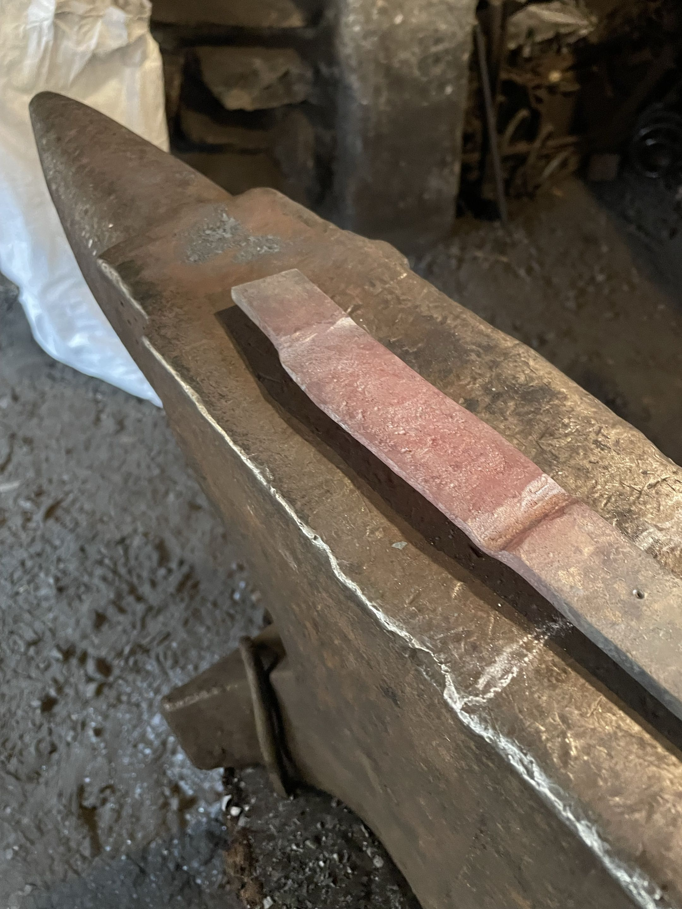
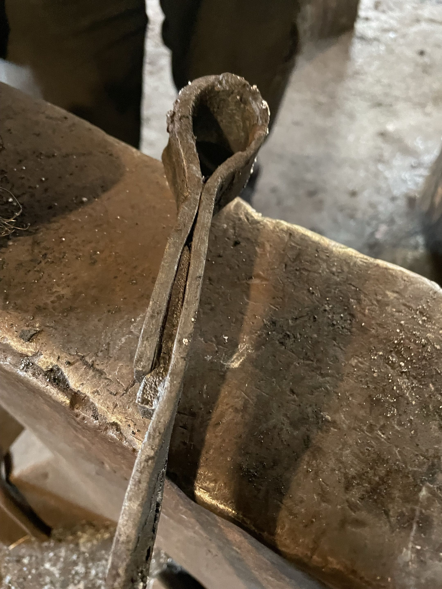
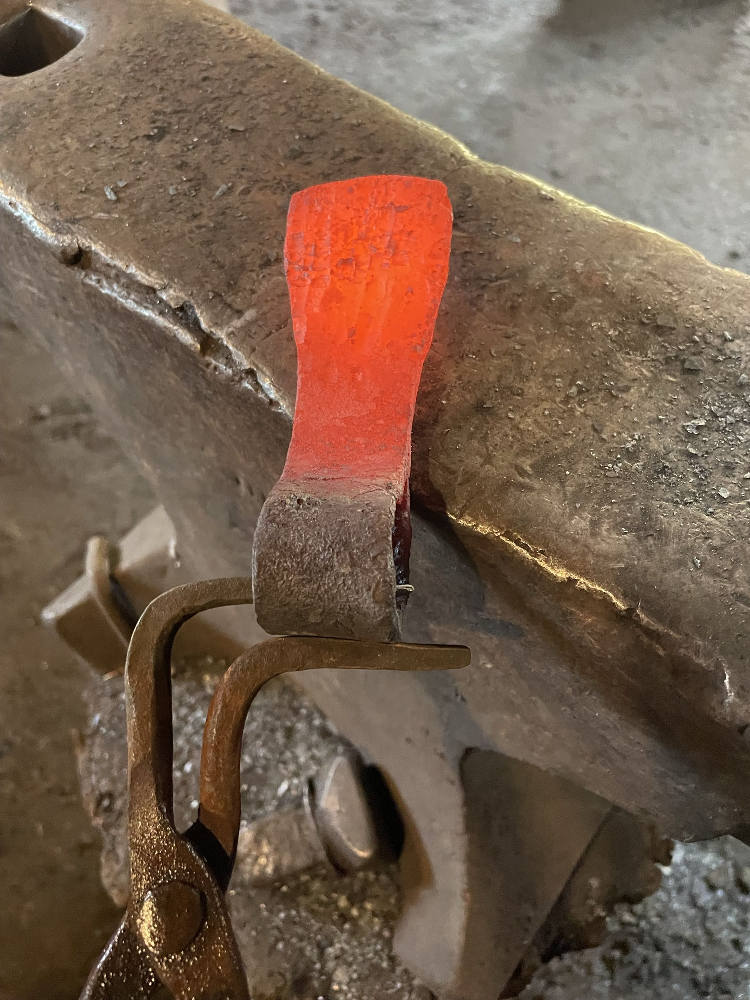
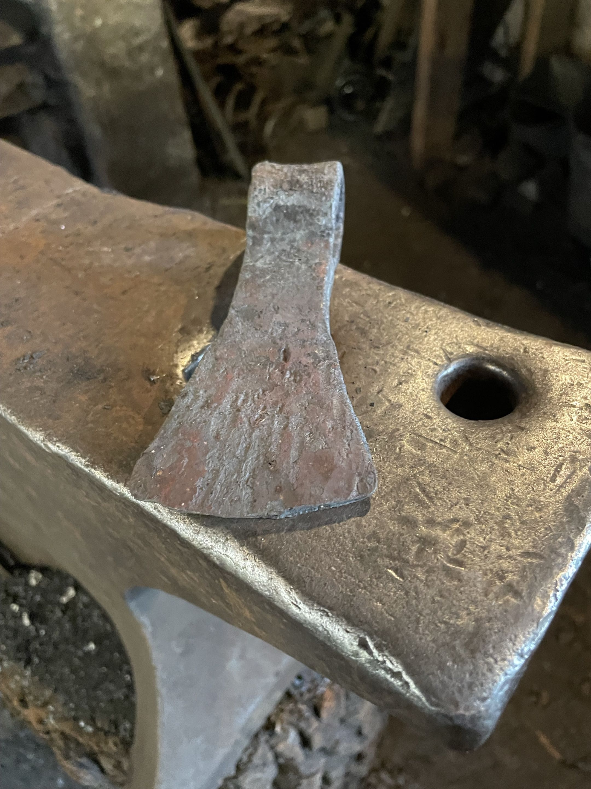

genscalator
Power tools for agents:smarter, safer, faster.
Genscalator is a typed Scala toolbox and habits for more productive agentic software engineering.
Blacksmith photography by Susanne R.Built and bootstrapped with her own tools.